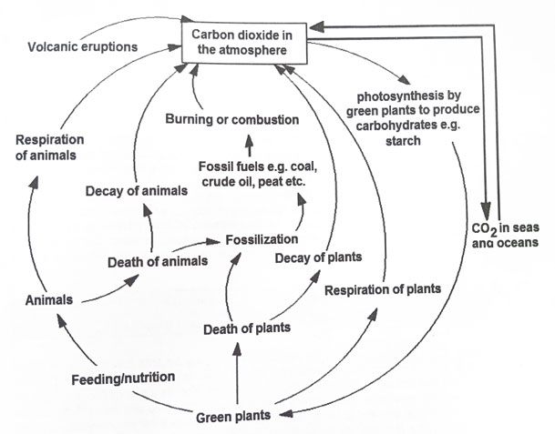
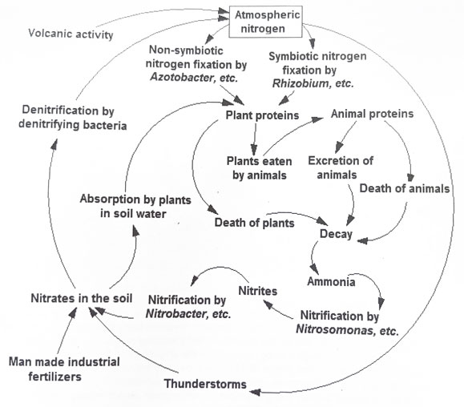

Note: You can also draw a diagram to illustrate the carbon cycle as shown below

Diagram illustrating the carbon cycle
Note: You can also draw a diagram to illustrate the nitrogen cycle as shown below

Diagram illustrating the nitrogen cycle